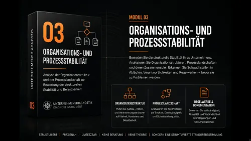

Modul 2 – Entscheidungsfähigkeit im Unternehmen
Produktprofil · Marktplatz-Daten 2026-10-10 · Verkaufsseiten-Recherche 2026-10-09 · Kategorien: Business & Investment, Politics & Economy, Leadership & Management
- Modul 2 – Entscheidungsfähigkeit im Unternehmen ist ein/e Download in Business & Investment und Politics & Economy, vertrieben über den Digistore24-Marktplatz von Anbieter weipert-consulting-gmbh, gelistet seit 2026-05-31.
- Listenpreis $328.65; Digistore24 meldet — Checkout-Konversion, — Stornierungsquote und 20 % Affiliate-Provision.
- Verdienst pro Verkauf (Affiliate): $65.73 (Anbieter-seitige Statistik, keine Prognose).
Interesse an Modul 2 – Entscheidungsfähigkeit im Unternehmen? Aktueller Preis, Boni und Garantiebedingungen finden Sie auf der offiziellen Seite des Anbieters:
Offizielle Verkaufsseite ansehen
Affiliate-Link (Werbung) — wir verdienen ggf. eine Provision, ohne Mehrkosten für Sie.

Marktplatz-Daten
| Produkttyp | Download |
|---|---|
| Preis | $328.65 (Single payment) |
| Affiliate-Provision | 20 % |
| Garantie/Rückgabe | Laut Verkaufsseite des Anbieters — vor dem Kauf auf der offiziellen Seite prüfen |
| Anbieter | weipert-consulting-gmbh (gelistet seit 2026-05-31) |
| Marktplatz-Statistiken* | Checkout-Konversion — · Stornoquote — · Verdienst/Verkauf $65.73 |
* Anbieter-seitige Statistiken von Digistore24; sie hängen von der Traffic-Qualität ab und sind keine Prognose.
Marktplatz-Beschreibung des Anbieters
Modul 2 – Entscheidungsfähigkeit im Unternehmen Sie erwerben ein strukturiertes Diagnoseinstrument zur Analyse der Entscheidungsfähigkeit eines Unternehmens. Dieses Angebot richtet sich ausschließlich an Unternehmer im Sinne des § 14 BGB. Das Instrument umfasst: • standardisierte Analysefelder (Scoring 1–4) • gewichtete Risikoindikationen je Organisationsebene • Identifikation von Entscheidungsblo…
Von der Verkaufsseite des Anbieters
Seitentitel: 02 Entscheidungsfähigkeit im Unternehmen - weipert
Hauptüberschrift
weipert
02 Entscheidungsfähigkeit im Unternehmen
Abschnitts-Überschriften
- Dieses Instrument analysiert die Entscheidungsfähigkeit Ihres Unternehmens unter Belastungs- und Veränderungsbedingungen.
Einstiegstext
Dieses Instrument dient der strukturierten Analyse der Entscheidungsfähigkeit eines Unternehmens.
Im Mittelpunkt stehen Entscheidungswege, Zuständigkeiten und Verantwortlichkeiten sowie die Frage, ob Entscheidungen auch unter Belastung klar vorbereitet, wirksam getroffen und konsequent umgesetzt werden können.
Preis: 349 € inkl. 19 % MwSt. Der Nettopreis beträgt 293,28 €. Die gesetzliche Mehrwertsteuer wird im Bestellformular von Digistore24 gesondert ausgewiesen.
Recherche-Methode: rohes HTML · 221 Wörter · Qualität: medium · recherchiert am 2026-10-09. Vollständige Recherche-Datei (MD) ↗
Wie Produkte dieser Art geliefert werden
Allgemeiner Hinweis zu diesem Produkttyp (keine anbieterspezifische Anleitung): Download-Produkte werden digital geliefert: sofort nach dem Checkout erhalten Sie Downloadlinks (oder Zugang zu einem Mitgliederbereich) — kein physischer Versand. Für die genaue Anwendung von Modul 2 – Entscheidungsfähigkeit im Unternehmen sind die offizielle Verkaufsseite und die enthaltenen Materialien maßgeblich.
Weitere Bilder (von der Verkaufsseite des Anbieters)
Bilder stammen von der offiziellen Verkaufsseite des Anbieters und zeigen das Produkt, wie es beworben wird.
Gut zu wissen
- Hoher Preis: $328.65 ist eine erhebliche Ausgabe — prüfen Sie, ob es einen Zahlungsplan gibt, und vergleichen Sie zuerst die günstigeren Alternativen der Kategorie.
- Keine Garantie-Formulierung in unserer Recherche gefunden — bestätigen Sie das Rückgabefenster auf der offiziellen Seite, bevor Sie kaufen.
- Marktplatz-Zahlen (Preis, Provision, Konversion, Stornoquote) — Quelle: offizielle Digistore24-Marktplatz-API (Affiliate-Sicht), Stand 2026-10-10. Gegenprüfung: Marktplatz-Suche nach Produkt-ID 688214.
- Verkaufsseiten-Zitate — Quelle: https://weipert-consulting.de/unternehmensdiagnostik/entscheidungsfaehigkeit-im-unternehmen/, abgerufen 2026-10-09 (Methode: rohes HTML). Verify: offizielle Seite öffnen.
- Garantie / Rückgabe — vom Anbieter festgelegt; vor dem Kauf auf der Verkaufsseite bestätigen.
- Nicht von uns geprüft: Produktqualität, Ergebnisse, Testimonials — kein Praxistest für dieses Listing durchgeführt.
Häufige Fragen zu Modul 2 – Entscheidungsfähigkeit im Unternehmen
Antworten aus dem Marktplatz-Snapshot (2026-10-10) und der Verkaufsseiten-Recherche (2026-10-09); Anbieteraussagen sind inline gekennzeichnet.
Was ist Modul 2 – Entscheidungsfähigkeit im Unternehmen?
Modul 2 – Entscheidungsfähigkeit im Unternehmen ist ein Angebot des Typs „Download" im Digistore24-Marktplatz, Anbieter: weipert-consulting-gmbh, gelistet seit 2026-05-31. Eingepflegt unter Business & Investment und Politik & Wirtschaft. Digistore24 wickelt Checkout, Lieferung und Rückgaben ab.
Wie viel kostet Modul 2 – Entscheidungsfähigkeit im Unternehmen?
Der Digistore24-Marktplatz listet es für $328.65 (single payment). Preise legt der Anbieter fest und können sich ändern — der Marktplatz-Eintrag oben zeigt den Schnappschuss; die offizielle Verkaufsseite zeigt den aktuellen Preis.
Gibt es eine Geld-zurück-Garantie für Modul 2 – Entscheidungsfähigkeit im Unternehmen?
Unsere Verkaufsseiten-Recherche hat keine explizite Garantie-Formulierung gefunden. Viele Digistore24-Produkte bieten 60 Tage Geld-zurück, aber das legt jeder Anbieter selbst fest — bestätigen Sie es auf der offiziellen Verkaufsseite, bevor Sie kaufen.
Ist Modul 2 – Entscheidungsfähigkeit im Unternehmen seriös?
Wir bewerten keine Seriosität — wir veröffentlichen überprüfbare Zahlen: Anbieter weipert-consulting-gmbh (gelistet seit 2026-05-31), Checkout-Konversion —, Stornoquote —, Affiliate-Verdienst/Verkauf $65.73 (alles Anbieter-seitige Marktplatz-Statistiken). Lesen Sie unsere 6-Punkte-Bewertungsmethode und entscheiden Sie anhand der Zahlen — oder diskutieren Sie Modul 2 – Entscheidungsfähigkeit im Unternehmen auf GitHub.
Wo kann ich Modul 2 – Entscheidungsfähigkeit im Unternehmen sicher kaufen?
Nur über die offizielle Verkaufsseite, die auf dieser Seite verlinkt ist (Checkout und Rückgaben laufen über Digistore24). Prüfen Sie dort Preis und Garantie vor der Bestellung. Der Link ist ein Affiliate-Link — der Kauf unterstützt diese Website ohne Mehrkosten für Sie.
Wie erhalte ich Modul 2 – Entscheidungsfähigkeit im Unternehmen nach der Zahlung?
Der Checkout läuft über Digistore24: Nach der Zahlung erhalten Sie Ihren Zugang oder Download per E-Mail und in Ihrem Digistore24-Kundenkonto. Lieferdetails für diesen Produkttyp: Download-Produkte werden digital geliefert: sofort nach dem Checkout erhalten Sie Downloadlinks (oder Zugang zu einem Mitgliederbereich) — kein physischer Versand. Bei Problemen kann der Digistore24-Käufersupport Ihre Bestellung wiederherstellen.
Ähnliche Angebote in Business & Investment

SHOWUP 3 Monate Strategie- und Umsetzungsbegleitung für dein Business. Du steckst Zeit und Arbeit in deinen Content, feilst an Angeboten und denkst über deine P

Bewerbe die Nummer #1 Online NFT & Web3 Masterclass für NFT & Web3 Investoren und Anleger. Beschreibung: Eine Masterclass. Eine Plattform. Alles dabei.

498,50 € Provision pro Verkauf – plus Folgeprovisionen Du schickst den Interessenten. Unser professioneller Nachfolge-Workshop übernimmt den Verkauf. Thema: Imm

Verdiene 50% Provision mit der #1 Masterclass für Online-Kurs-Business Promote das kostenlose Online Training „Online Kurse erstellen und passiv verkaufen mit K
Weitere Angebote von weipert-consulting-gmbh

Modul 3 – Organisations- und Prozessstabilität Sie erwerben ein strukturiertes Diagnoseinstrument zur Analyse der Prozess- und Dokumentationsstabilität eines Un

Modul 1 – Handlungsfähigkeit im Personalausfall Sie erwerben ein strukturiertes Diagnoseinstrument zur Analyse der organisatorischen Handlungsfähigkeit eines Un
Modul 2 – Entscheidungsfähigkeit im Unternehmen ist auch gelistet in
Politik & Wirtschaft (34 Produkte) · Führung & Management (58 Produkte)
Ähnliche Preislage in Business & Investment

Ein einfaches Copy & Paste Business System! Für alle Affiliates eine klasse Chance. Denn du bekommst auf dieses Produkt 30% Provision + Upsells (30 - 50%).

Erstelle dir ein vollautomatisiertes Online-Business, das Tag und Nacht für dich Geld verdient. Das ist ein absolutes Premium-Programm für alle, die es WIRKLICH

Lerne, wie du als Einsteiger ohne Vorwissen erfolgreich deine ersten Trades umsetzt, mit klaren Strategien, wenig Zeitaufwand und voller Kontrolle über dein Ris

Stell dir vor, du wachst auf und siehst auf deinem Handy Verkäufe. Du spürst diese Freiheit, Sicherheit und freust dich schon auf den Tag, an dem du weiter an d
Ähnliche Suchanfragen
Wo Sie es sich ansehen können
Wo Sie es sich ansehen können
Aktuelle Preise, Garantie und Boni finden Sie auf der offiziellen Verkaufsseite:
Offizielle Verkaufsseite ansehen
Das ist ein Affiliate-Link (Werbung) — kaufen Sie darüber, verdienen wir ggf. eine Provision, ohne Mehrkosten für Sie.
Quellen & weiterführende Informationen
- Offizielle Verkaufsseite (aktueller Preis, Garantie, Boni): weipert-consulting.de/entscheidungsfaehigkeit-im-unternehmen (Affiliate-Link)
- Öffentliche Digistore24-Produktseite: digistore24.com/product/688214
- Vollständige Recherche-Datei (Markdown, versioniert): content/products/56756-modul-2-entscheidungsf-higkeit-im-unternehmen.md
- Marktplatz-Kategorie: Business & Investment
Wie wir Produkte wie Modul 2 – Entscheidungsfähigkeit im Unternehmen bewerten
Sechs Prüfungen, ausschließlich mit offiziellen Marktplatz-Zahlen. Die vollständige Bewertungsmethode lesen · unsere Recherche-Standards & Kennzeichnung.
Fragen oder eigene Erfahrungen mit Modul 2 – Entscheidungsfähigkeit im Unternehmen?
Praxis-Tests veröffentlichen wir erst, nachdem wir ein Produkt selbst gekauft haben — aber Ihre Erfahrung hilft anderen Lesern: Diskussion zu Modul 2 – Entscheidungsfähigkeit im Unternehmen auf GitHub starten/verfolgen. Falsche Zahl gefunden? Korrektur melden — jede Seite zeigt ihre Datenstände, Korrekturen gelten für die ganze Website.